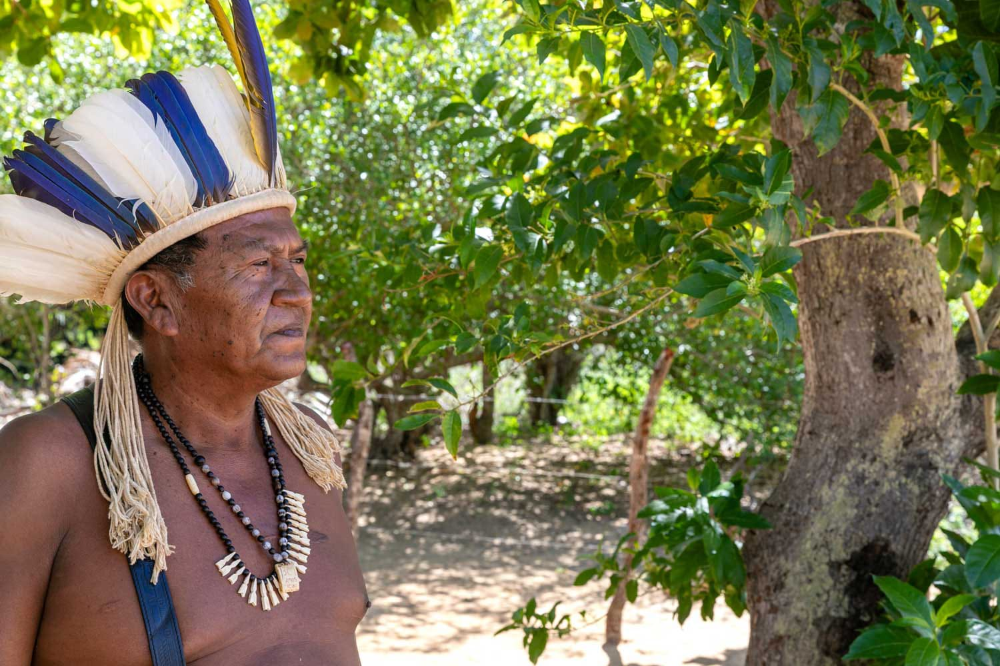

O Cacique Manoel Cristovam Batista (Manoel Kiriri) representa uma das lideranças do povo Kiriri em Banzaê, Bahia, reconhecido por sua atuação na luta pelos direitos indígenas e na consolidação de políticas públicas no semiárido. Não foi possível encontrar a idade exata do cacique, porém, dados do Repositório Institucional da UFBA mostram que ele é uma liderança que atua desde o final dos anos de 1990 e início dos anos 2000. Uma curiosidade é que, dentro da tribo, ele tem o papel também de professor, sendo mencionado em documentos como liderança responsável por grupos na T.I.Kiriri.